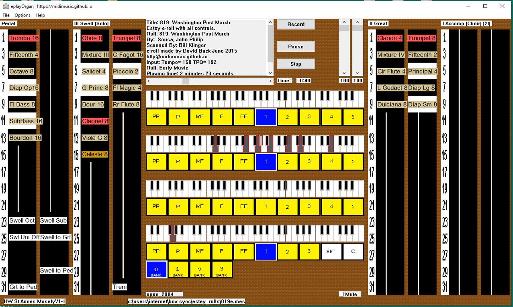

EplayOrgan
Author: David Back, November, December 2017, March, June, July, October 2018
EplayOrgan, Multiple Pipe Organ Simulator
Version 2.2f Now Available for download
EplayOrgan is a multi purpose sample based pipe organ simulator intended to be playable by organists and versatile enough to be useful to everybody with an interest in organs. It will load and be playable almost instantly and does not need an expensive computer with huge amounts of memory. This organ was designed and tested on a 64 bit Windows 10 system but was always intended to be versatile in that it will run on any Windows system back to and including Windows XP. It will also run on any Mac or Linux system under Wine. Latency is negligable under Windows.
I am still gaining experience with it myself and invite comments from others, particularly experienced organists, on its merits or problems with playability. My contact details are in About on this website. I will endeavour to cure any problems which arise and issue new versions as appropriate.
Main Features
- Easy and quick to install.
- All included organs are fully set up, just connect one or more midi keyboards, select ports, select your organ and begin playing.
- The correct midi channels are automatically set up for each organ.
- The keys, stops, pistons and two swell indicators are all fully animated and their state is easily visible.
- Optional Second Touch is available on all organs.
- Optionally velocity sensitive on every rank. Useful for piano ranks.
- All stops are coloured and may be "swiped" open or closed, Manuals have a fully chromatic "swipe".
- The stops have automatically selected font sizes, varying with display size which makes them easy to read.
- Coupled keys move to show their state.
- See the Wurlitzer Band Organ keys and stops moving for the first time ever.
- Organs included: Miditzer 160, 216 and 260 cinema organs
Wurlitzer 125, 150 and 165 band organs
Hauptwerk St Anne's Mosely, Burea Church, Paramount 310
Estey Church Organ
Viscount Regent and a Viscount Church organ for use with eplayWin32
Allen Generic Church and Theatre organs (they both use Allen's Universal NRPN set) - More organs can be easily added.
- All organs have the same basic layout and are user configurable.
- Optional individual .sf2 sound font for each division. Many useful sound fonts are included.
- Includes Bruce Miles stereo organ soundfonts, updated for eplayOrgan, and Rich Olsen's Band Organ fonts.
- Up to four stereo audio outputs with adjustable reverb and unlimited polyphony.
- Built in midi player and recorder using the latest technology.
- Multiple playlists. Provides continuous playing of multiple midi files. No other organ has this feature.
- Pistons can be selected by program changes in a midi file.
- Built in two tone metronome.
Pistons can be selected by program changes in a midi file, making this organ perfect for translating organ midi files to play properly on other organs. See: Organ File Conversion for details.
Second touch is now optionally available on all organs. Unlike other organs the second touch keys move to show exactly what is happening.
You could use velocity sensitive ranks to make the first velocity sensitive pipe organ.
Various videos of eplayOrgan in action
Miditzer 260 Theatre Organ
Wurlitzer 165 Band Organ
Estey Church Organ
Viscount Regent Church Organ